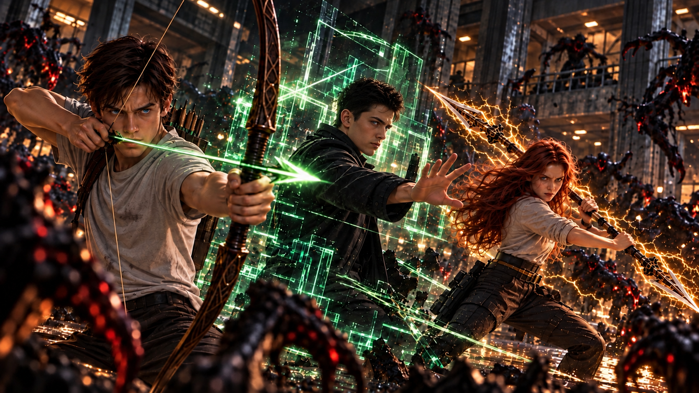

WHITE MAGIC ART STUDIO
第十三章
雷光與火焰
鹽湖城．東湖地下教會
轟——！
第二聲巨響從地底深處傳來。
整座地下教會猛然震動，醫療觀察室裡的燈光劇烈閃爍，天花板上的灰塵簌簌落下。
「所有人留在這裡！」
傑西推開醫療觀察室的大門，紫色雷光瞬間纏繞雙臂。
然而，當他踏出房門，卻猛地停下腳步。
中央會堂已經陷入混亂。
數頭惡魔正在會堂中央遊走，更多黑影則不斷從各處通道湧入。原本供信徒聚會的空間，此刻充斥著尖銳的嘶吼與奔逃的腳步聲。
「怎麼可能……」
安娜跟在後方，難以置信地看著眼前的景象。
「牠們怎麼進來的？」
「結界沒有破。」
傑西抬頭望向牆面。
那些用來守護地下教會的聖術紋路依然亮著，沒有任何遭到破壞的跡象。
他的臉色卻更加凝重。
「看來牠們過去不是進不來。」
柴克一怔。
「什麼意思？」
「而是不敢進來。」
傑西望向不斷湧入的黑影。
「現在不一樣了。牠們有魔神撐腰。」
前方突然傳來一聲怒吼。
「傑西！」
烈火猛然掃過中央走道！
幾頭逼近的惡魔被迫向後退去。
火光後方，一名中年男人正握著黑金相間的雙頭火炬，死守通往生活區的入口。
潔西卡也在他身旁。
她的靈獸艾波琳已經進入戰鬥狀態，赤紅色火焰沿著身體燃燒，隨時準備迎擊。
「羅尼！」
傑西快步上前。
「其他人呢？」
「傷員全部撤到後面了！」
羅尼揮動雙頭火炬，再次逼退一頭惡魔。
「剩下還能戰鬥的人，都在守其他入口！」
「雷呢？」
羅尼的動作停了一瞬。
「……不在。」
傑西猛然轉頭。
「什麼？」
「我剛才去找過他，沒看到人。」
柴克也愣住了。
雷叔叔？
他不是才剛離開密室？
「他有說去哪裡嗎？」傑西追問。
「沒有。」
羅尼壓低聲音。
「但他離開前來找過我，說了一些……很像告別的話。」
傑西的拳頭瞬間握緊。
「那個白痴……」
轟！
另一側牆面猛然震動。
更多惡魔衝進會堂，尖銳的嘶吼聲打斷了所有人的思緒。
「牧師！」
潔西卡大喊。
傑西猛然回神。
他看了一眼陷入混亂會堂，又望向通往外界的方向。
最後咬緊牙關。
「先守住這裡。」
「可是雷——」
「他很強。」
傑西打斷羅尼，聲音沉了下來。
「現在這裡有更多人需要我們。」
紫色雷電瞬間從他腳下展開。
「所有還能戰鬥的人，守住生活區跟醫療室！」
「不要讓任何一頭惡魔靠近傷員！」
「是！」
四周的聖術師立刻回應，迅速奔向各自的位置。
柴克站在後方，看著所有人投入戰鬥。
每個人都知道自己該做什麼。
只有他。
什麼都沒有。
沒有術器。
沒有元素。
沒有靈獸。
甚至連最基本的聖術都還不會。
一頭惡魔突然越過火線，朝他猛撲而來！
「柴克！」
翡翠綠光閃過。
砰！
惡魔彷彿撞上一面看不見的牆，整個身體被彈向側面。
克里斯出現在柴克面前，雙手纏繞著流動的綠色程式碼。
「待在我旁邊。」
柴克怔了一下。
又是這句話。
清晨在變電廠裡的爭執，仍清楚地留在他的記憶中。
但這一次，他沒有反駁。
「好。」
克里斯反而回頭看了他一眼，似乎沒想到他會答應得這麼乾脆。
柴克察覺了那道目光。
「我只是不想再讓你擔心了。」
克里斯沒有說話。
片刻後，他重新望向戰場。
只是原本緊繃的肩膀，似乎稍微放鬆了一些。
「安娜！」
克里斯喊道。
「三十秒！」
安娜已經召出艾連。
「你每次都說三十秒！」
「因為三十秒夠妳用了！」
「最好是！」
她猛然衝入戰場。
金色雷光沿著黑金雙頭劍爆開！
克里斯則半跪下來，將右手按向地面。
嗡——
大量翡翠色程式碼從他的掌心向外擴散。
柴克低下頭。
綠色數據正沿著地磚、牆面與支撐會堂的柱體快速延伸。
「你在做什麼？」
「讀取。」
克里斯目不轉睛地望著眼前浮現的數據。
「這裡不是訓練室。我不能直接控制一個還沒完全解析的空間。」
柴克看向四周。
「所以你打算把整座教會……」
「其中一部分。」
克里斯的雙手迅速操作浮現在面前的資料。
「變成我的領域。」
前方，安娜踩上斷裂的柱體，借力躍起。
艾連在半空中劃出一道金色雷弧！
砰！
一頭惡魔被雷光正面掃開。
另一側，艾波琳從潔西卡肩上一躍而下。
火焰在空中拉出一道赤紅弧線，落地瞬間向四周擴散，迫使附近的惡魔退開。
羅尼則站在中央走道。
黑金雙頭火炬高速旋轉，熊熊烈火沿著地面延伸，形成一道阻擋惡魔的防線。
三種截然不同的戰鬥方式，在柴克眼前同時展開。
這不是訓練。
也不是有人刻意放慢速度，讓他看清每一個動作。
這是真正的聖術師戰場。
「左邊！」
柴克突然喊道。
安娜立刻回頭。
一頭惡魔正從她的視線死角撲來！
她側身閃過，艾連反手掃出。
砰！
惡魔重重撞上牆面。
安娜回頭看了柴克一眼。
「謝啦！」
柴克愣了一下。
隨即低頭看向自己的雙手。
他依然沒有任何力量。
可是——
他看得到。
籃球場上也是這樣。
誰正在空檔。
誰沒有注意身後。
哪條路線即將被切斷。
他一直都看得到。
柴克緩緩抬起頭。
這一次，他不再盯著自己空空的雙手。
而是將目光投向整個戰場。
「潔西卡！上面！」
潔西卡立刻抬頭。
艾波琳躍上柱體，迎面撞開從高處落下的惡魔。
「羅尼叔叔！右邊那條走道！」
羅尼轉動火炬。
火焰瞬間封住入口！
克里斯一邊運算，一邊抬眼看向柴克。
他沒有說話。
但眼神似乎有了些變化。
「十五秒！」
克里斯喊道。
「你剛才不是已經算很久了嗎？！」
安娜在遠處大喊。
「不要干擾工程師！」
「誰是工程師啊！」
柴克幾乎要被這兩人的對話逗笑。
然而下一秒，地面突然震動。
又一批惡魔衝進會堂。
這一次，數量更多。
安娜被迫向後退。
羅尼的火線也開始收縮。
潔西卡額頭已經滲出汗水。
「克里斯！」
「好了。」
聲音不大。
卻讓柴克猛然轉頭。
克里斯緩緩站起。
眼前最後一道程式碼，終於完成。
他抬起手指。
啪。
像按下某個不存在的按鍵。
整個世界彷彿安靜了一瞬。
接著——
嗡！
綠光亮起。
不是一道。
而是整座中央會堂。
地板。
牆面。
柱體。
天花板。
數以萬計的翡翠色程式碼同時浮現！
柴克睜大眼睛。
原本熟悉的地下教會，彷彿被另一個由數據構成的世界覆蓋。
「歡迎來到……」
克里斯抬起手。
雙眼映著高速流動的綠色數據。
「我的領域！」
下一秒，一頭惡魔朝他撲來！
克里斯沒有閃躲。
只是抬起一根手指。
惡魔腳下的地面瞬間分解成綠色數據。
砰！
一道方形屏障拔地而起，直接將牠彈向半空！
克里斯的身影隨即消失。
柴克甚至來不及看清楚發生了什麼。
哥哥已經出現在會堂另一側。
綠色數據迅速凝聚成巨大的拳套。
一拳轟出！
惡魔被整個擊飛。
「哇……」
柴克忍不住低聲驚嘆。
克里斯再次消失。
數道綠色鎖鏈從牆面竄出，瞬間纏住另一群惡魔。
安娜立刻看懂他的意圖。
她衝上前。
「艾連！」
金雷爆開！
被束縛的惡魔同時被震飛。
柴克站在原地。
第一次真正明白，為什麼克里斯平常訓練他們時，總是一副游刃有餘的模樣。
在自己的領域裡，這傢伙根本不需要遵守正常的戰鬥方式。
「Z！」
柴克猛然回頭。
安娜從另一側跑來，手上竟然多了一把弓。
「接著！」
「什——」
柴克慌忙伸手接住。
那是一把普通的訓練長弓。
還有一袋箭矢。
他抬起頭。
「妳哪來的？！」
「訓練室！」
「妳剛剛還有時間去拿？！」
「因為有人一直站在這裡，很想幫忙！」
柴克愣住。
安娜已經重新衝向戰場。
「哥！」
柴克轉頭看向克里斯。
克里斯也看著他手中的長弓。
兄弟兩人短暫對視。
昨晚的爭吵。
紐約教堂。
還有那句——
我差一點沒把你帶回來。
都還清楚地留在彼此心裡。
柴克原本以為，克里斯會叫他把弓放下。
然而，克里斯只是抬起手。
翡翠色數據從掌心流出。
一支。
兩支。
十幾支綠色箭矢迅速構成，落入柴克背後的箭袋。
柴克怔住。
「這些箭進入我的領域後，會一起被數據化。」
克里斯說。
「能夠傷到牠們。」
柴克望著他。
「所以……」
「待在後面。」
克里斯說。
柴克的表情微微一僵。
但哥哥接著補上一句。
「幫我們看著死角。」
柴克停住。
克里斯看著他。
「做得到嗎？」
不是——
你不准過來。
也不是——
這不是你能參與的戰鬥。
而是——
做得到嗎？
柴克握緊長弓。
「當然。」
克里斯點頭。
「那就交給你了。」
他轉身重新投入戰場。
柴克看著哥哥的背影，深吸一口氣。
搭箭。
拉弓。
周圍所有聲音彷彿逐漸遠去。
他的視線穿過混亂的戰場。
安娜。
潔西卡。
羅尼。
克里斯。
移動。
距離。
角度。
下一秒。
他看見了。
一頭惡魔正從二樓殘破的平台躍下。
目標——
安娜！
柴克鬆開弓弦。
咻——！
綠色箭矢穿過戰場。
在惡魔碰到安娜之前，精準命中！
砰！
惡魔在半空中崩解成大片數據光點與灰沙。
安娜猛然回頭。
柴克仍保持著放箭後的姿勢。
兄妹兩人隔著戰場對視。
安娜笑了。
「漂亮！」
柴克也笑了。
他立刻抽出第二支箭。
這一次，沒有人告訴他該射向哪裡。
他自己尋找目標。
搭箭。
拉弓。
咻！
第二箭。
第三箭。
第四箭。
他沒有雷電。
沒有術器。
甚至還不知道自己的力量究竟在哪裡。
但他知道怎麼拉弓。
知道怎麼瞄準。
也知道怎麼保護自己的家人。
至少現在。
這就夠了。
「克里斯！後面！」
箭矢率先射出！
克里斯頭也沒回，只是向旁側身。
箭矢從他的肩旁掠過，正中後方逼近的惡魔！
克里斯回頭。
看見柴克。
柴克挑了一下眉。
「不用謝。」
克里斯嘴角微微上揚。
「專心。」
話音未落，他再次化為綠色數據，消失在原地。
戰況開始逆轉。
原本各自為戰的三兄妹，第一次真正進入彼此的節奏。
克里斯控制戰場。
安娜突破前線。
柴克守住所有人看不見的地方。
沒有事先商量。
卻像已經合作過無數次。
遠處，傑西看見了。
他的目光停留在三兄妹身上。
很久。
彷彿想起了什麼。

十五年前。
也曾經有三個年輕人，這樣站在一起。
「詹姆斯……」
傑西低聲說。
羅尼恰好退到他身旁。
「什麼？」
傑西搖了搖頭。
「沒什麼。」
他重新望向戰場。
眼神卻已經不同。
「羅尼。」
「嗯？」
「幫我清出中央區域。」
羅尼看了他一眼，立刻明白。
「所有人退開！」
他猛然揮動雙頭火炬。
火焰向兩側展開！
「離中央遠一點！」
克里斯第一個察覺。
「柴克！」
綠色數據瞬間包住柴克。
下一秒，他整個人被轉移到會堂邊緣。
「欸？！」
安娜也迅速後撤。
潔西卡抱起艾波琳。
所有人接連退離中央。
只剩傑西，獨自站在那裡。
柴克第一次看見這樣的傑西。
不是牧師。
也不是那個總會笑著安慰人的長輩。
紫色雷光從他的腳下緩緩升起。
沿著身體攀升。
一道。
兩道。
越來越多。
整座會堂殘留的電流，開始朝他聚集。
斷裂的電線。
破損的燈具。
甚至克里斯領域中尚未散去的雷電能量。
全都匯向同一個方向。
「他要幹嘛？」
柴克低聲問。
克里斯望著中央。
「哼，真不愧是牧師。」
傑西抬起頭。
雙眼已經被紫色雷光照亮。
惡魔們彷彿察覺到危險，開始不安地躁動。
下一秒。
紫雷落下！
轟——！
柴克下意識抬手遮住眼睛。
雷聲吞沒一切。
紫色電流以傑西為中心，向四面八方擴散！
掠過柱體。
穿過走道。
所有仍在會堂中的惡魔，同時被雷光吞沒。
數秒後。
雷聲停止。
柴克慢慢放下手。
中央會堂安靜了。
只剩破損的牆面、焦黑的地面，以及尚未完全散去的紫色電流。
「……」
柴克看著傑西。
又看向克里斯。
「你們平常到底還藏了多少東西？」
克里斯解除領域。
翡翠色程式碼一點一點消失。
「很多。」
安娜走了過來。
艾連在她手中化為金光，逐漸消散。
「至少你剛才射得不錯。」
「不錯？」
柴克看著她。
「我剛剛救了妳欸。」
「我本來也躲得掉。」
「妳連看到都沒看到！」
「我有感覺到。」
「妳少來——」
「好了。」
克里斯打斷兩人。
柴克轉頭看向他。
克里斯也看著柴克。
停頓了一秒。
「射得很好。」
柴克愣住。
安娜挑起眉毛。
「哇。」
「閉嘴。」
克里斯立刻轉身。
但柴克笑了。
「謝謝。」
克里斯沒有回頭。
只是抬起一隻手，算是聽見了。
另一側。
傑西卻沒有放鬆。
他走向羅尼。
「現在外面什麼情況？」
羅尼搖頭。
「還不知道。」
「結界內都已經出現這麼多惡魔……」
傑西望向通往地面的方向。
「外面只會更糟。」
他的目光又移向另一側。
雷仍然沒有回來。
「羅尼。」
「嗯？」
「你跟潔西卡準備一下，等等出去確認鹽湖城的狀況。」
羅尼點頭。
「那雷呢？」
傑西沉默片刻。
「我去找他。」
柴克恰好走近，聽見了這句話。
「雷叔叔怎麼了？」
傑西轉過頭。
柴克望著他。
「他去哪裡了？」
「不知道。」
「可是——」
傑西看著柴克。
最後，他沒有再用「大人的事情」敷衍。
「我擔心他去紐約了。」
柴克臉上的笑意瞬間消失。
紐約。
魔神。
父親的身體。
他立刻明白了。
「他想自己去找魔神？」
「我不知道。」
傑西說。
「所以我要先找到他。」
柴克握著長弓的手慢慢收緊。
傑西注意到了。
「別擔心。你叔叔比你想像中強。」
柴克低下頭。
「我現在比較擔心的，不是他夠不夠強。」
傑西停住。
柴克想起不久前，雷談起詹姆斯時的表情。
也想起在紐約廢棄教堂裡，自己看見父親那張臉時，幾乎無法壓抑的憤怒。
「我覺得……」
柴克望向通往地面的階梯。
「他可能根本沒打算安全回來。」
傑西的眼神變了。
他沒有回答。
因為他最害怕的，正是同一件事。
片刻後，傑西重新看向安德烈三兄妹。
「你們三個！」
柴克、安娜與克里斯同時回頭。
「換上方便戰鬥的衣服後，到我的辦公室來！」
傑西的語氣不容置疑。
三兄妹彼此看了一眼。
剛剛才結束的戰鬥，似乎只是另一場風暴的開始。